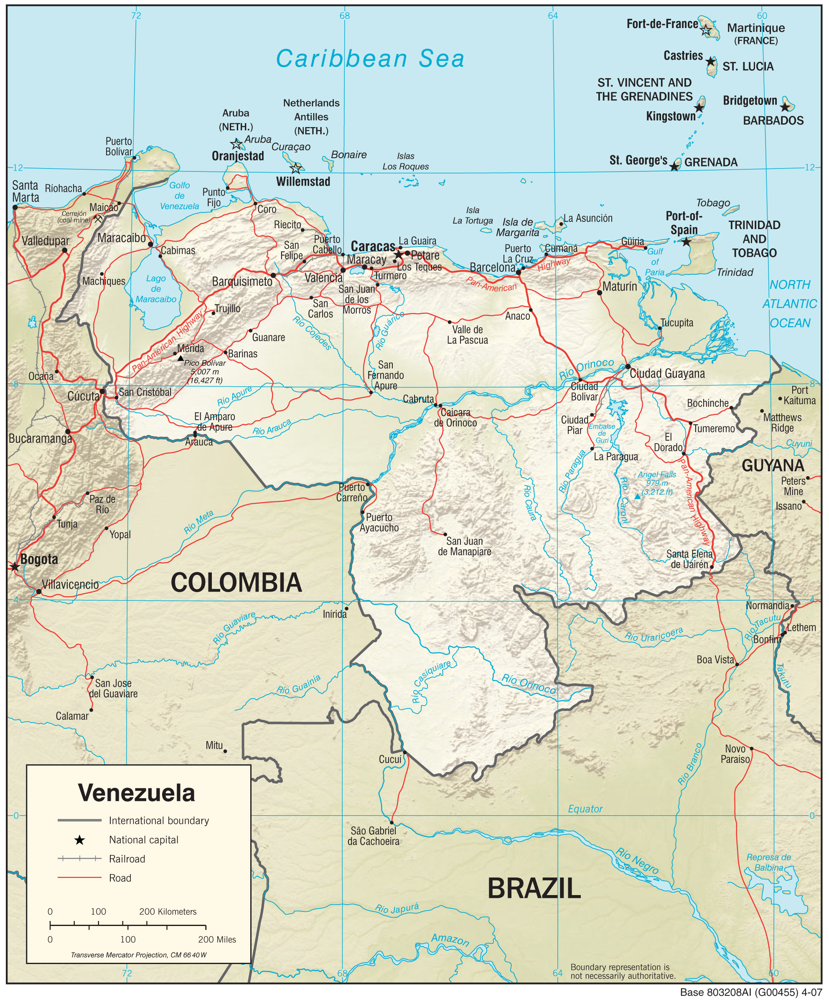
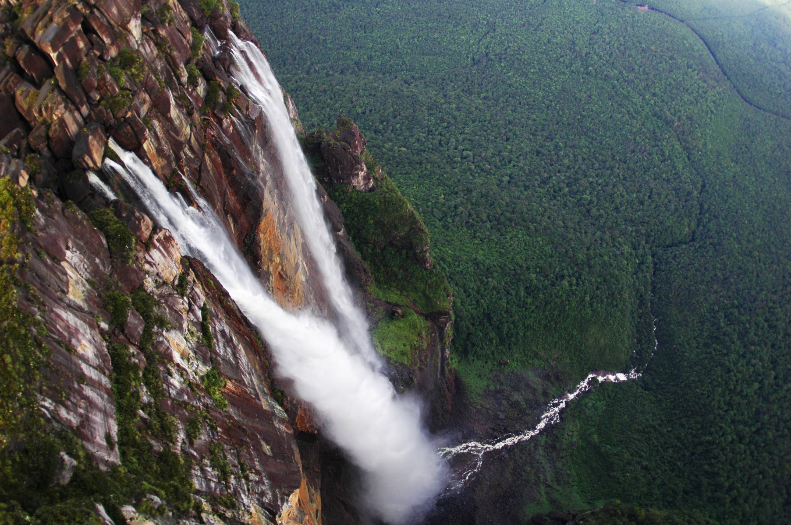
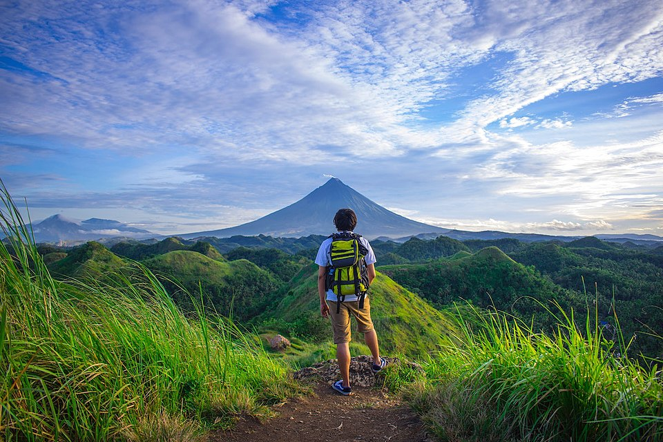
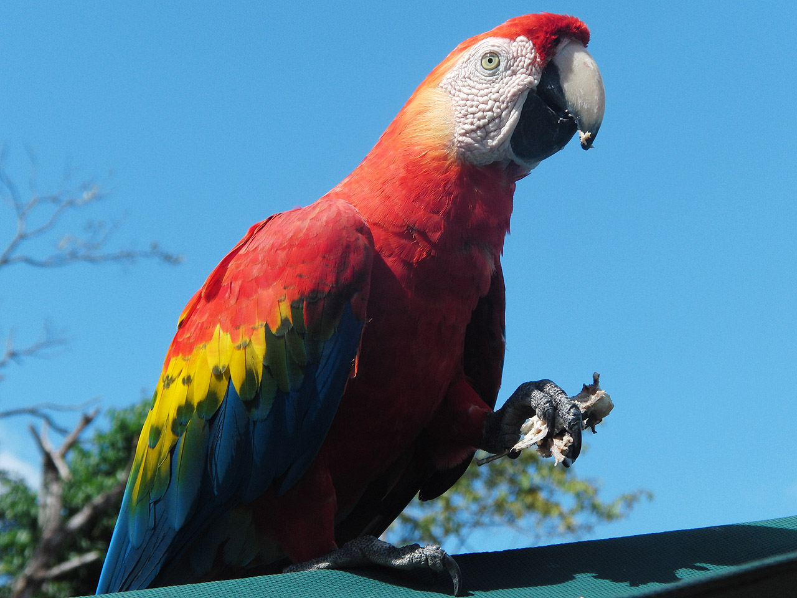
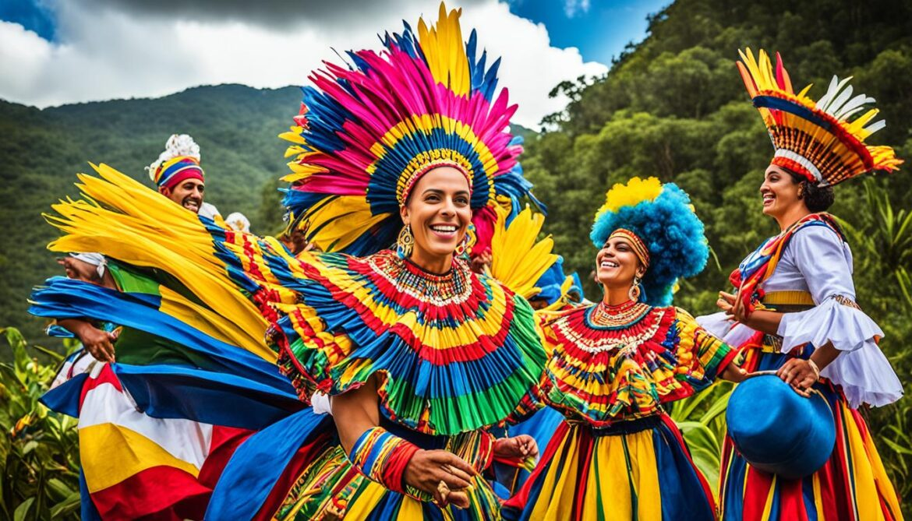
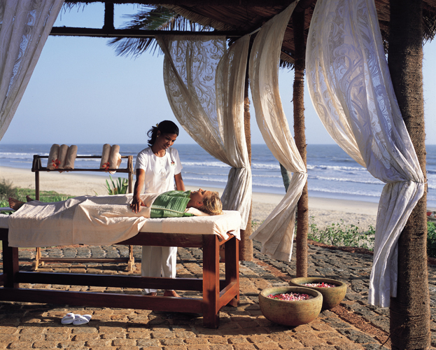
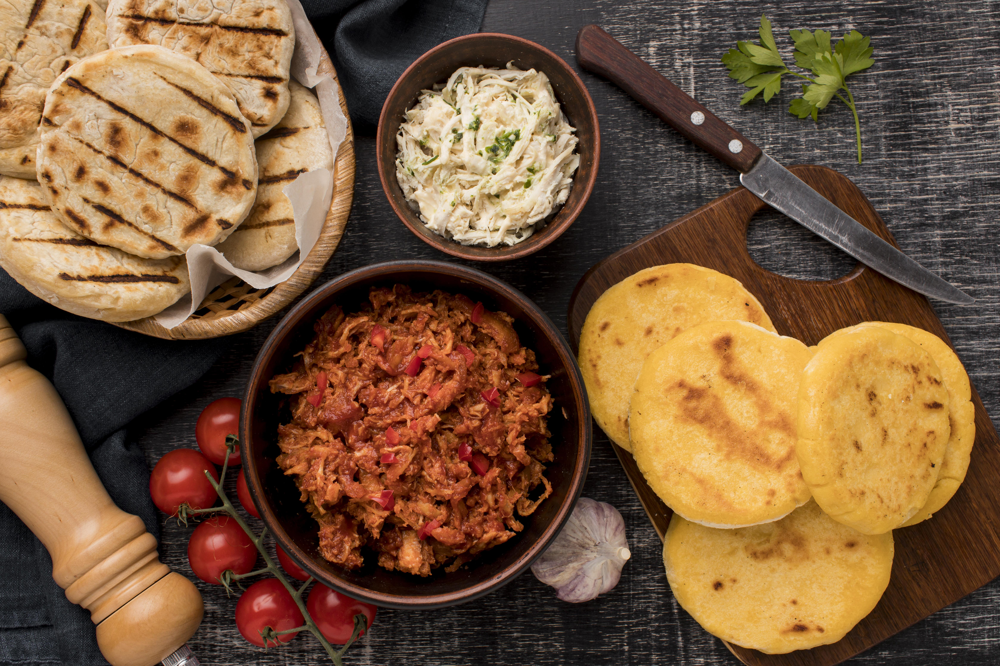
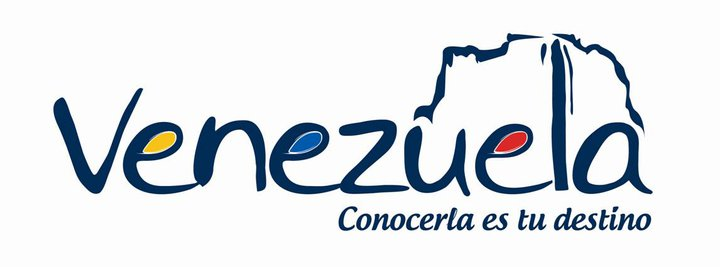

ABOUT THIS WEBSITE

This website is a student web development project created by March Gregg F. Deolay as a comprehensive digital tourism guide to the Bolivarian Republic of Venezuela. It was built to explore and showcase the extraordinary diversity of one of South America's most fascinating countries — from its ancient tepuis and Caribbean coastlines to its world-class athletes, vibrant festivals, and beloved national cuisine.
WHY VENEZUELA?
Venezuela is a country that often goes undiscovered by the wider world, yet it holds within its borders some of the most spectacular natural wonders, richest cultural traditions, and most passionate sporting communities on the planet. Angel Falls is the tallest waterfall on Earth. Los Roques is one of the Caribbean's last truly pristine archipelagos. Yulimar Rojas holds the triple jump world record. The hallaca is one of the most complex and beautiful dishes in all of Latin American cuisine. The Diablos Danzantes de Yare is a UNESCO Intangible Heritage of Humanity. Venezuela deserves to be known — and this website is an attempt to help tell its story.

WHAT YOU WILL FIND HERE
-
ADVENTURE

-
WILDLIFE

-
HISTORY & CULTURE

-
LEISURE

-
SPORTS

-
SPECIAL

This site is organized into six main categories that together cover the full breadth of what Venezuela has to offer. Adventure covers natural spots, urban destinations, and national parks. Wildlife takes you through Venezuela's six distinct ecosystems and the remarkable animals that inhabit them. History & Culture explores historical sites, museums, archaeological discoveries, and living festivals. Leisure introduces Venezuela's therapeutic and cosmetic traditions. Sports covers professional leagues, competitive events, participatory activities, and recreational adventures. Special dives into Venezuela's extraordinary cuisine and drinking culture.
A NOTE FROM THE CREATOR
This project was a genuine labour of love. Researching Venezuela's wildlife, history, sports, food, and culture revealed just how much richness this country holds — and how little of it is widely known outside its borders. Every page on this site represents hours of research, writing, and design decisions, all aimed at doing justice to a country that deserves far more attention than it typically receives. I hope that anyone who browses these pages walks away with a deeper curiosity about Venezuela and perhaps, one day, the desire to experience it in person.
— March Gregg F. Deolay

Venezuela is a country of extraordinary depth, beauty, and soul — and it is waiting to be discovered. Bienvenidos a Venezuela.